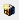

Add a Data Point and Symbol to a Graphic using the Library Browser
You want to add one or more symbols from the Library Browser view to a graphic. Note that specific symbols require specific data point types. For example, you cannot associate an Analog Output data point with a symbol intended for a Binary Output symbol.
- System Manager is in Engineering mode, and a graphic is displayed in the canvas area.
- (Optional) In System Browser, you have enabled Manual Navigation.
- On the View tab, from the Display Views section, click the Library Browser check box.
- The Library Browser displays.
- In the Library Browser, from the Filter drop-down menu, click Symbol

. - A list of all available symbols displays in the Library Browser view.
- From the Filter by System and Filter by Library drop-down menu’s, select the appropriate systems or libraries to search. You can also select <All> to search through all available systems or libraries in the project.
- The symbol automatically display in the view as you enter the text.
- If you know the name of the symbol, in the Type to Filter field, type the name of the symbol.
- Drag the symbol onto the active graphic. To select multiple symbols, press the CTRL key and click the symbols you want to add from the Symbol Browser display.
- The symbol displays on the graphic as a symbol instance.
- With the symbol instance selected, from System Browser, click and drag the data point onto the symbol instance on the canvas, or the Object Reference field in the Properties view.
- The data point is associated with the symbol instance on the canvas.
- Repeat as needed for each symbol and data point you want to add to the graphic.